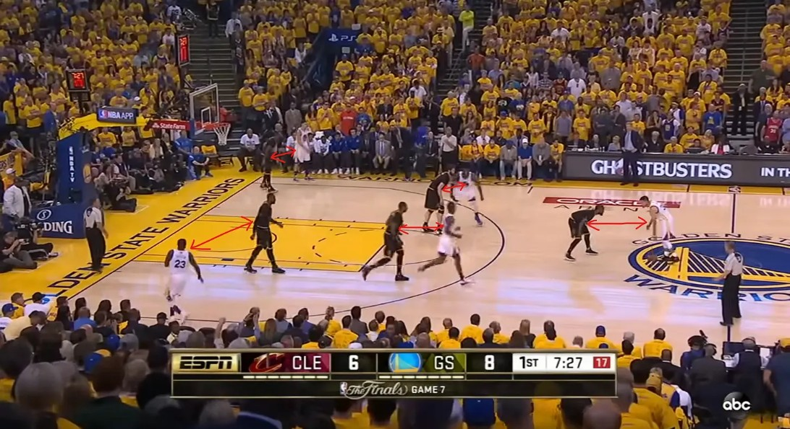
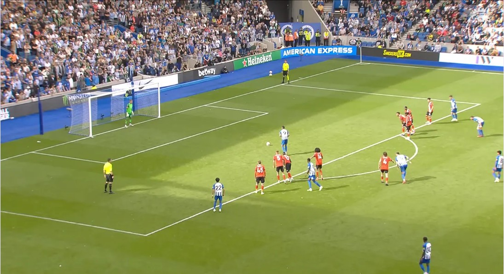
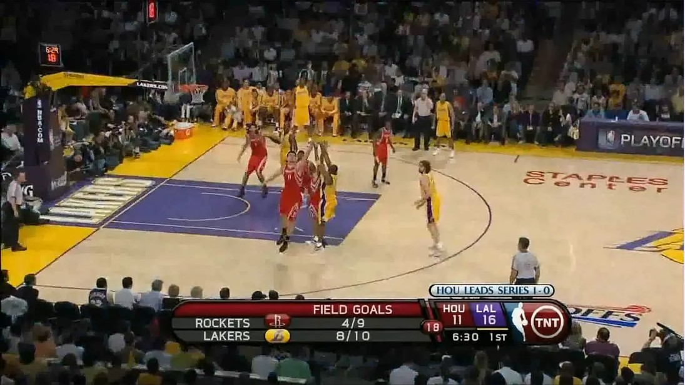

Basketball
Unsurprisingly, I love basketball. I also play point guard…I love a flashy pass, a sick crossover, or a beautiful jumpshot. But what if I were to tell you my favorite part of the game is actually defense? Now basketball is a nuanced sport, so I won’t get into details of the myriads of defenses which exist. I’ll only focus on man-to-man defense, where every defensive player chooses a player on the offense to guard and it is the defensive player’s responsibility to stick to that player and guard them all over the court. Here is an example.

Let’s establish some elementary, yet key principles:
- Offensive players who are open, i.e. do not have a defender near them, will generally make their shots more frequently compared to not being open. Thus, it is in the defense’s best interest to not let any offensive player be open and a good way to address this issue is by placing one defender near each offensive player.
- Note that this distance may not always be the same as LeBron James (black-jersey defender in the bottom-left) gives more room to Draymond Green (white-jersey offensive player in the bottom-left corner of the court) compared to J.R. Smith (black-jersey defender in the top-left) being closer to Klay Thompson (white-jersey offensive player in the top-left corner of the court). This goes into the nuance of guarding better shooters more closely, but we need not go into such details here.
- The game has evolved analytically to the modern era so that there are more willing and better 3-point shooters so it is in the offense’s best interest to space their 5 players around the court to their best ability (emphasis on this last part since a player who cannot make 3-pointers efficiently roaming outside of the 3-point line is a non-threat so they provide facetious spacing). Another benefit of this spacing is the impossibility of a single defender simultaneously guarding multiple offensive players. If the defense could, they would just double-team the person who has the ball to force a turnover and gaining control of the ball, but the risk is too great of leaving an offensive player with space open.
- Basketball also has imbalanced transition periods where it may not be a full 5 vs. 5 near the basket, which could benefit the offense if they have more players than defenders near the basket. Usually, the offense scores in this situation. Defenders in this case attempt to occupy the space between the player they are guarding and the basket to prevent this numerical advantage.
What are the consequences of these principles? For one, defenses usually look similar to the above picture where five defenders are spread out in order to prevent any offensive player’s direct line to the basket. This scenario is not particularly notable, but as you might expect, this structure cannot hold up for the entirety of the game. Far more exciting to me is when this structure breaks down, and the offense gains a momentary advantage, the defense must adapt on the fly to recover.
Offenses are good enough that they usually capitalize on this advantage, but there are times the defense can still wreak havoc and run the shot-clock down to force a bad shot from the offense. Here is a great example of such defense.
There are several moments in which the Timberwolves defensive players in white are seemingly caught-off guard by not being in the best defensive position and leaving the Bucks offensive players in green open. Man-to-man principles have disappeared and sometimes there are open players which need to be addressed immediately, so multiple players must rush at the player with the ball to prevent them from scoring. But this double-team leads to a new open offensive player and this scramble must repeat until the offense feels sped up and forced to put up a low-percentage shot. And one of the all-time great positional defenders, Rudy Gobert, is able to perfectly block this shot.
But this is no small feat. This scramble is extremely exhausting and demands a high level of communication and synchronized coordination between the five defensive players, which is rare to see. Several teams have players who simply do not prioritize defense to demand such high energy. But when a successful defensive scramble does happen, I genuinely believe it’s one of the most wonderful parts of the game.
Of course there are solo defensive sparks as well, but I’m not talking about plays such as the iconic chasedown block (where a player sprints back to improbably block an offensive player’s shot despite their huge advantage of proximity to the basket). These are highly entertaining though and the greatest example I have ever seen is below from the 2016 NBA Finals.
Instead, I wish to focus on plays where a single defender can simultaneously defend against multiple offensive players. Here’s a mesmerizing example from the 2021 NBA finals.
(I disagree with the title, but I digress as I want to take nothing away from it.)
The video’s narration does pretty well, but I would like to highlight some other aspects:
- This play occurs in a matter of two seconds.
- 99 times out of 100, the offensive player scores here. The defender, Giannis Antetokounmpo, is absolutely optimally positioned to disallow the initial offensive player with the ball to shoot or drive, yet also able to prevent the dunk behind him. It’s a play that surely could not be made without ridiculous athleticism, but the positioning is chef’s kiss.
A similar example which is more under the radar involves a single player defending against three players simultaneously.
It may seem as if Draymond Green, the lone defender, just stands under the basket without really doing anything and the offensive players just lose the ball. But Draymond Green is a savant when it comes to defensive positioning. He takes a measured step forward to the first player coming down the middle to discourage a shot attempt, which forces a pass. His measured step is pivotal since he maintains his balance and good positioning to address the next offensive player with the ball if necessary. And indeed, he can instantly recover to guard the next player with the ball and his positioning is so perfect that there is no shot to be taken and the only pass that can be made would have to be around him and tricky for the offensive players to catch, which is exactly what happens as the ball rolls out of bounds.
Responsibility
I enjoy defense due to its direct relationship with responsibility. I believe that while the origins of your problems may not belong to you, the effort and responsibility to solve them does. Many of my friends hold differing perspectives on this topic, which is reflected in how various sports address defensive responsibility.
Let’s take one end of the spectrum, which is football (“soccer”). This is a situation where the entire defense is at the penalty kicker’s mercy and cannot defend it.

Perhaps your defensive team has the best goalkeeper in the world. Penalty kicks are still consistently made between 75-80% of the time in professional leagues, simply because the kick comes in at such a speed that the goalkeeper can do nothing but blindly guess to leap across a goal far too wide for them to block alone. There are minimal psychological mind games and pressure involved, but there is no other optimal strategy than to guess.
One might disingenuously argue that basketball has free throws but it’s hardly a comparison between the magnitude of free throws and a penalty kick when it comes to scoring in their respective sports. Thus, a football team might have had a great game of defense yet lose to penalty kicks. A more amusing and less popular example is foosball at the highest levels where the very best players are so unstoppable at scoring since offensive players can smash the ball at such a high speed in such a small table that the defensive player has no hope other than to blindly guess. Watch a game, and you’ll see what I mean.
But on the opposite end of the spectrum is a game like chess. It is to our best knowledge that optimal defense should always result in a draw (sure there may exist some offensive tactic which could always force a win, but it certainly hasn’t been found yet). In games between Super Grandmasters (ELO >= 2700), the draw rate is above 70% in the last decade or so. In fact, the 2018 world classical chess championship was a 12-game slugfest in which Fabiano Caruana and Magnus Carlsen drew in every single game. Thus, I purport it is reasonable to claim that a loss should squarely be blamed on the defense in chess.
Basketball is a breath of fresh air which in my opinion lies on a fairly reasonable middle ground along this spectrum. Yes, it’s true that on select individual plays that offenses can score against a perfect defense — 6’6” Kobe Bryant does actually make this ridiculous shot over the outstretched arms of 6’8” Shane Battier and 7’6” Yao Ming.

But in reality, if an offense consistently scores against the defense for the entirety of a game or even a multi-game series, it is almost always a knock against the defense for suboptimal execution. Even if an offense has the best player in the world, there are coaching and defensive adjustments that can be made to address the imbalance.
Work
I love watching defenses also because I view daily work as a defensive endeavor. I can elaborate:
- Startups are run by people who depict their work as a race to handle current failures while building safety valves that stop them.
- Health-conscious efforts such as dieting, working out, and personal hygiene are preventative efforts which defend the body against heart disease, atrophy, and infections, respectively.
- I have a to-do list on my Google Calendar which I pretty much follow to tee. In my mind, I live a life of defense: “I have identified an open issue; design the fix”. (In turn, you could tell me that I’m the one who orchestrates the issues and lists so I run the offense. Fair play, I think this is perfectly valid as well.)
I don’t mean to persuade you to believing all of your work is defense. If this perspective makes you feel defeatist, or if you are happier viewing your life as an offensive endeavor, then you should absolutely do so. My lens through which I view my life and the world is that of defense in basketball. Every time I watch a beautiful or exceptionally difficult defensive play, I’m in awe at the professional athletes while also thinking to myself I aspire to reach this level of execution in resolving the problems in my life.